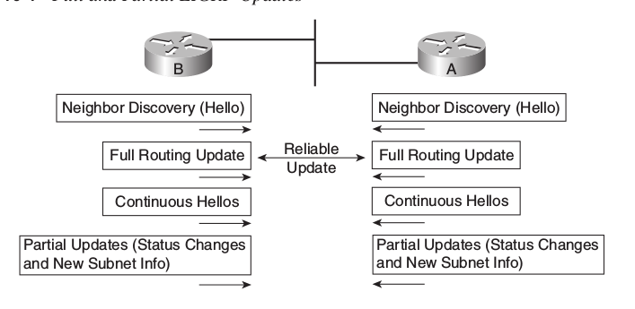
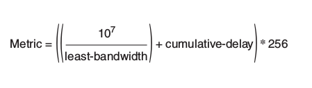

Eigrp is also called the advanced distance vector routing protocols, Cisco refers an EIGRP as simply advanced distance vector routing protocols. Eigrp is the Cisco-proprietary routing protocols, but from 2013, Ciso defined the EIGRP as an open standard protocols. Open standard enables the EIGRP to run on other Vendors routers as well.
To Discover the EIGRP neighbors, EIGRP sends the hello message via multicast address 224.0.0.10 to its neighbors routers. HELLO message is sent by the EIGRP routers to discover the neighboring EIGRP routers and check the basic parameters to determine which router should be neighbor router. if those basic parameters cannot passed, the eigrp neighbors discovery get failed.we will discuss more about neighbors discovery in latter chapters.
After peering with the neighbour, the EIGRP router initially exchange the entire topology table with the neighbour routers, and then only partial updates as needed based on the changes to the network topology
Each EIGRP router analyzed their topology table and choose the route having lowest metric to the destination networks / subnet
Upon completing the above three step process `Neighbour Discover`_ Topology Exchange Choosing the Best route the Eigrp router maintains the three different types of tables called.
Note
The router’s EIGRP K values must also match, this topic is beyond of CCNA 200-120 Version 2 course
In full routing updates, the eigrp routers exchange the entire routing tables with its neighbors, Full routing update occours when the neighbors first come up.
In Partial routing updates, the eigrp routers exchange only the recently changed routes.
Every routing algorithm routing table stores the best route to the destination
Note
